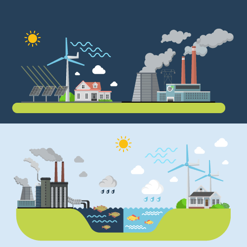
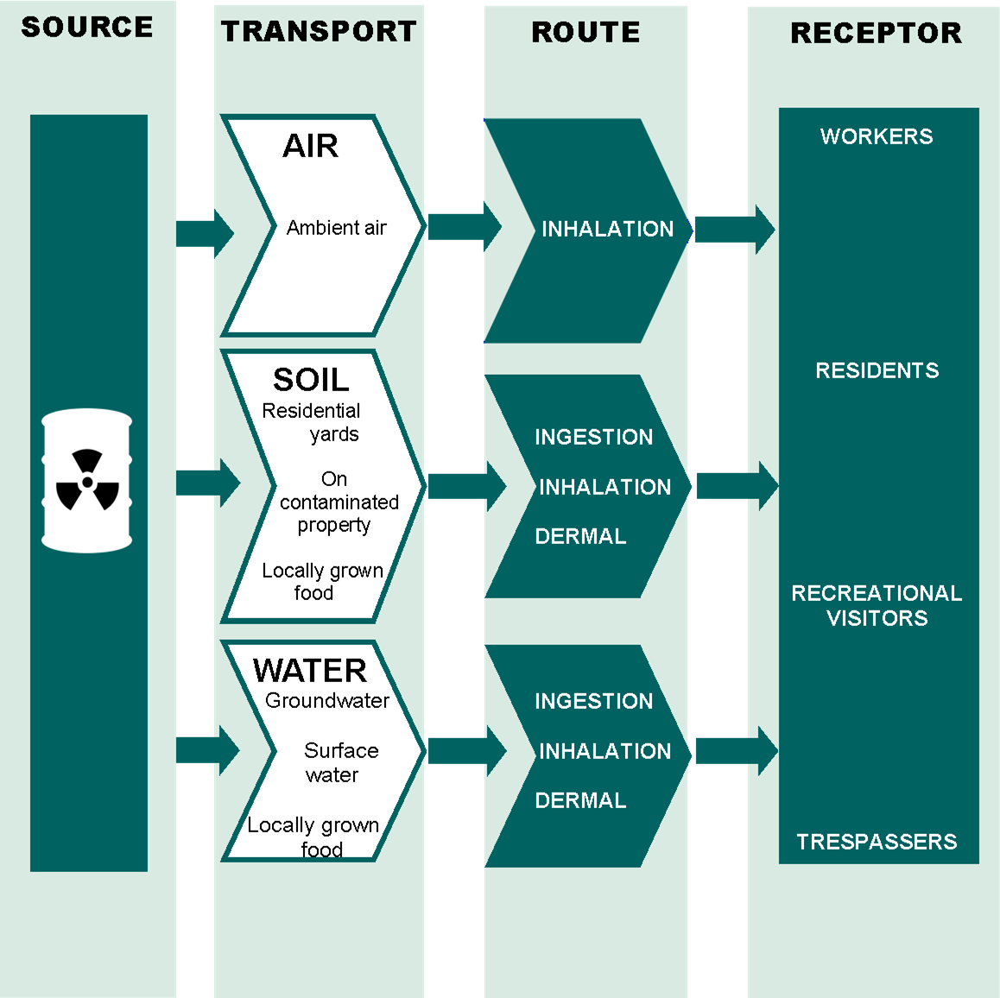

Exposures
What is Exposure?
Exposure happens when a chemical or contaminate gets into the body by eating, drinking, breathing, or touching it.
Exposure Assessment is measuring or estimating the amount of an outside substance(s) a person has in their body, and determining if having that substance in their body could make them sick.
Many things can change the way an exposure could affect a person’s health:
- The type of substance
- The way the substance enters the body (e.g. eating, drinking, or breathing)
- The amount of substance that enters the body
- The amount or concentration of substance in the environment
- The number of times and for how long a person is exposed
- The age of a person when they are exposed
- The health of a person when they are exposed
- The genetic makeup of the exposed person
- Other substances that a person is exposed to at the same time
Just because you are exposed to something does not necessarily mean your health will be affected.
What is an Exposure Pathway?
- An exposure pathway is how a substance gets from a source of exposure into the human body.
- A substance can travel through the air, water, or soil, and can enter your body when you eat, drink, breathe, or touch the substance itself or something that contains this substance.
- Eating, drinking, breathing, and touching are the main routes of exposure. Scientists call these ingestion (eating and drinking), inhalation (breathing), and dermal (touching) routes.
- The journey a substance takes to get from the source to inside a person is called an exposure pathway.
- For exposure to occur, there must be a way for a substance to get from the source to the human body (referred to by scientists as receptors).
Basic Exposure Pathway Model
Basic Exposure Pathway Model
- Starting with the toxic substance…
- It is transported through a variety of possible routes, such as inhalation, ingestion, and dermal.
- The receptor is a living being. In this diagram we have silohuettes of a male and a female.
| Route | Description |
|---|---|
| RouteInhalation (breathing) | DescriptionHazardous substances can be in the form of particles, gases, or vapors, all of which you can inhale when you breathe. |
| RouteIngestion (eating or drinking) | DescriptionHazardous substances can get into your body when you eat something contaminated with that substance. This could happen if you eat a vegetable grown in contaminated soil, if you eat meat or other products from an animal or fish that ate something hazardous, or by touching contaminated dirt or soil and then touching your food or your mouth. People can also be exposed by drinking or cooking with water that has been contaminated. |
| RouteDermal (touching) | DescriptionSome substances in the soil, air or water can be absorbed through the skin. This could happen when gardening or digging in the dirt, swimming, or showering or bathing. |
Graphic: Example Exposure Pathway for Contamination on an Industrial Site
Example Exposure Pathway for Contamination on an Industrial Site
Diagram of example exposure pathway for contamination on an industrial site
Beginning from a source, a contamination may spread through air (ambient air), soil (residential yards, on contaminated property, or locally grown food), and water (groundwater, surface water, locally grown food). The routes of contamination are related to the transport method. For air, inhalation; for soil, ingestion, inhalation, and dermal; for water, ingestion, inhalation, and dermal. The recipients of the contamination may be workers, residents, and recreational visitors/trespassoers.
How do we Measure Exposure?
The way we measure, or “assess” exposure depends on many factors:
- Some things are easier to measure than others. Sometimes it is easier to measure a substance in the environment than in a person and estimate the amount the person is exposed to.
- Other times, scientists can directly measure a substance in the body, usually by taking samples of blood, urine, hair, or other body tissues.
- When scientists can’t measure the substance itself inside the body or in the environment, they use biomarkers instead. Biomarkers provide evidence that a substance has been in the body. A biomarker can be measured in blood, urine, or other body tissues, and is a measurement of changes caused by the substance a person is exposed to.